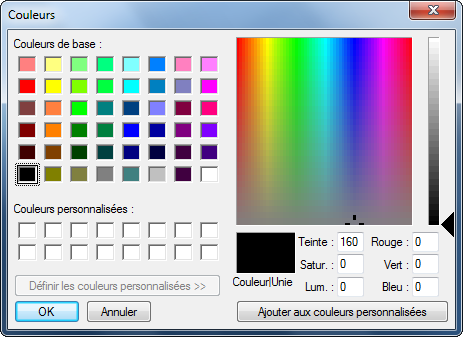

Action : Ouvrir une Boîte de sélection de couleur
Cette action va vous permettre d'afficher une boîte de dialogue à l'écran, proposant à l'utilisateur de saisir une couleur.
Paramètres
| Paramètres | Descriptions |
|---|---|
| Boîte de sélection de couleur concerné | Doit être égale à la Boîte de sélection de couleur qui devra être affichée. |
| Variable recevant le résultat (facultatif) | Doit être égale à la variable (non tableau) recevant le résultat de l'ouverture de la boîte de dialogue. |
Valeur retournée
La valeur retournée est déterminée par le choix de l'utilisateur. Elle sera enregistrée dans la variable définit dans le paramètre "Variable recevant le résultat". Cette valeur est de type texte (String).
| Boutons sélectionnés | Valeurs retournées |
|---|---|
| OK | OK |
| Annuler | Cancel |
Remarque : pour savoir quelle couleur l'utilisateur a choisit, utilisez l'action Obtenir une propriété d'un contrôle pour récupérer la valeur de la propriété "Color".
Code Visual Basic.Net généré par SoftwareZator
Votre_Variable = Votre_Boite_De_Dialogue.ShowDialog().ToString()
Erreurs d'exécutions
Aucune erreur d'exécution n'est détecté ici.
Caractéristiques
| Caractères | Informations |
|---|---|
| Niveau requis | Débutant |
| Catégorie | Intéraction |
| Type de valeur retourné | Texte (String) |
| Fonctionne dans les fonctions | Oui |
| Fonctionne dans la zone de déclaration | Non |
| Peut recevoir des actions enfants | Non |